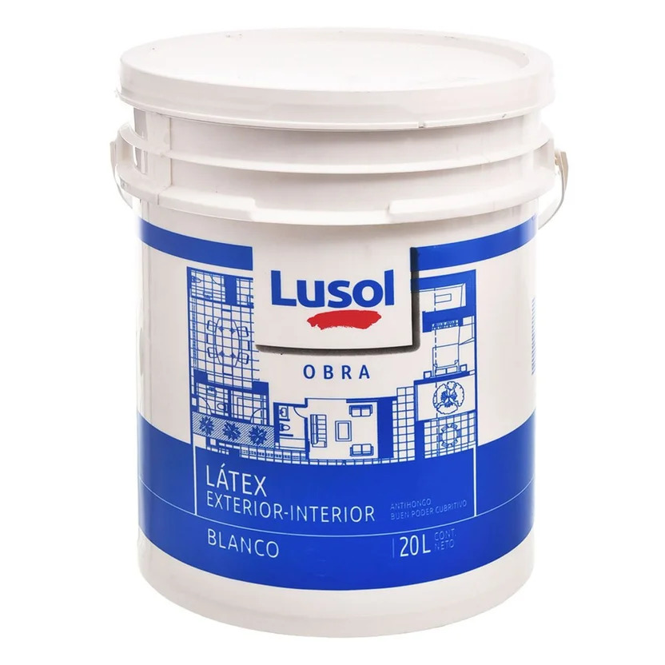

Pintura látex para interiores

Recubrimiento generalmente al agua que proporciona color y acabado a paredes y techos. Se ofrece en diversos tonos y niveles de brillo, y requiere preparar la superficie antes de aplicarlo.